Privacy & Space
A private villa surrounded by ocean air and space to disconnect — exclusively yours.
From $400 / night · available from 1 November 2026
Check availabilityMakunduchi · South Coast · Zanzibar
A private home at the edge of the Indian Ocean — for those who know the difference.
Inquire About Your StayNot a resort. Not a hotel. A private home at the edge of the Indian Ocean — for those who know the difference.
Zuri Cliff · Zanzibar
Morning
Coffee on the terrace while the tide is still low. Sunlight moves across white stone floors and warm teak. Nothing is scheduled before you decide it should be.
Midday
The infinity pool holds the horizon. Indoors, the open living and dining space stays cool under cross-breeze and ceiling fans — a hush that only cliffside privacy can give you.
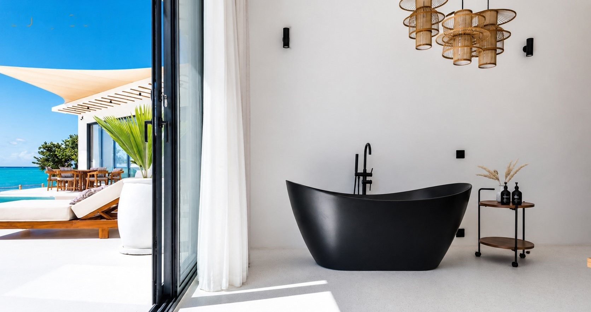
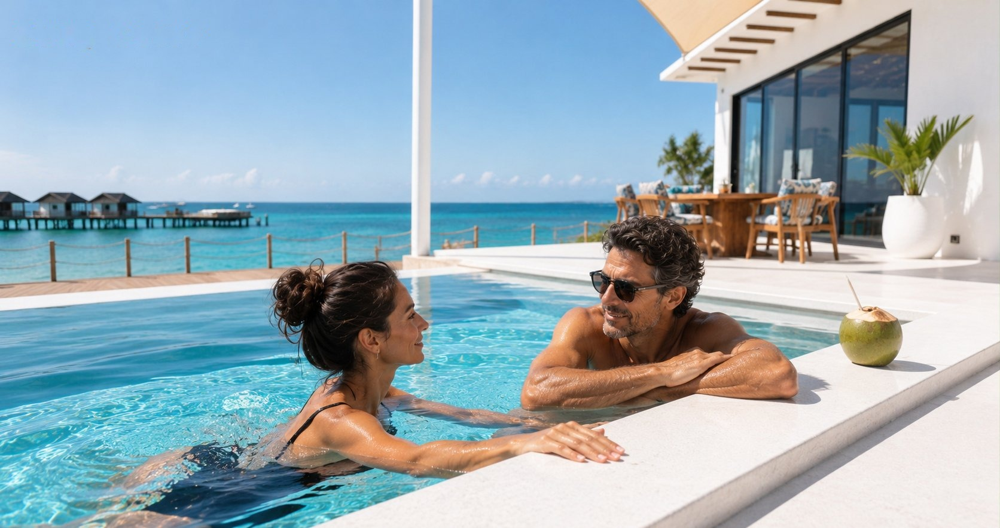
Evening
The clifftop timber deck catches the last light. Dinner is served where the ocean turns copper, then indigo, and Zanzibar's dhows drift past in silhouette.
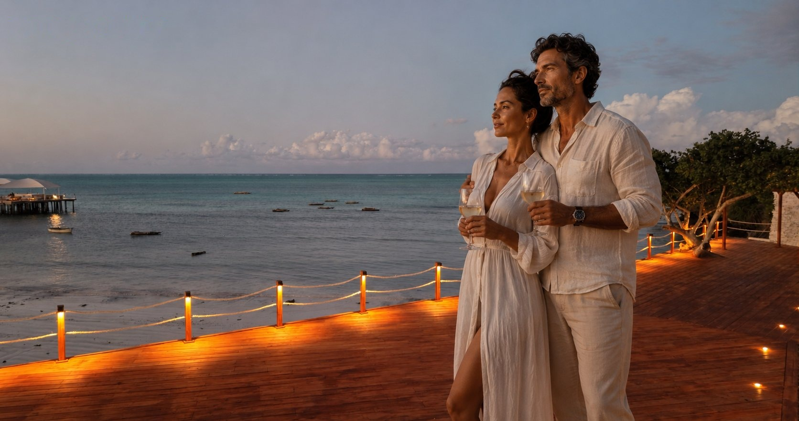
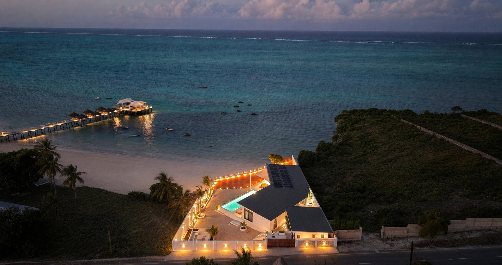
Two bedrooms, one ocean, no one else.
Check availabilityThe Villa
Zuri Cliff is an exclusive private residence on the quiet southern coast of Zanzibar, designed for adults who value calm, design and genuine connection with nature.
Warm teak, soft linen, handcrafted lighting and ocean-facing spaces create a residence feeling — refined, private and personal.
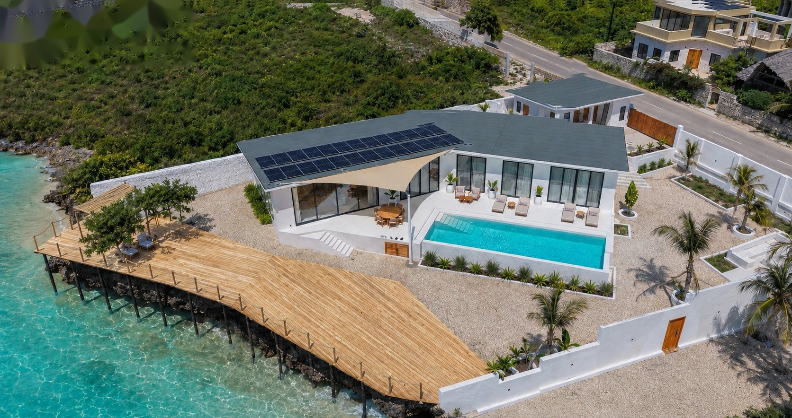
Our Story
What struck us first wasn't the ocean below the cliff, but the pace of things. A laugh counted for more than a calendar, and time moved noticeably slower than in any office back in Europe — and that stayed with us. The observation became an attitude: real craft over mass production, what lasts over what gets used up. The attitude became Zuri Cliff — a home built so you arrive from the first moment, not just check in.
Which light by the pool actually works, which craftsman treats teak the right way, which clinic nearby is actually worth trusting — these things get settled in person, on site. Both of us are actively involved, Laetitia mainly through the winter months and whenever she's needed. If you write to us, you get us.
The same closeness shaped how the villa was built. Every beam on the timber deck, every light on the ceiling, was built by craftsmen who have known this coast for generations, using teak and materials native to the island — and we were there in person from the first foundation to the last lamp.
Zanzibar gave us a great deal, and giving something back became part of how we build and run this place: our own solar array (15.47 kWp) with battery storage covers most of our own power needs, rather than drawing extra from the local grid that our neighbours in Makunduchi rely on too. In the end, no one should feel less at home here than we did from the very start.
Pictures only go so far. The silence you have to hear yourself.
Check availabilityExperience
A private villa surrounded by ocean air and space to disconnect — exclusively yours.
Indoor and outdoor areas shaped around light, sea breeze and panoramic views over the Indian Ocean.
Teak, terrazzo, soft fabrics and handmade details — every material chosen with care.
Adults-only Retreat
Zuri Cliff is an adults-only hideaway for people who appreciate privacy, good design and quiet time by the ocean.
Gallery
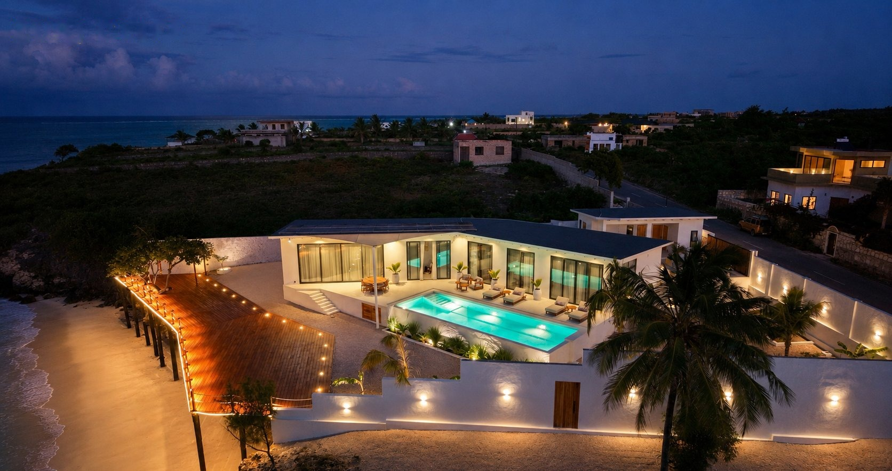
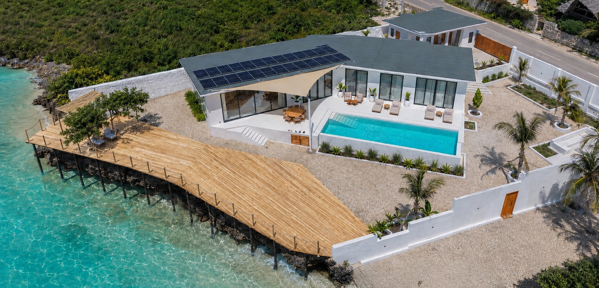
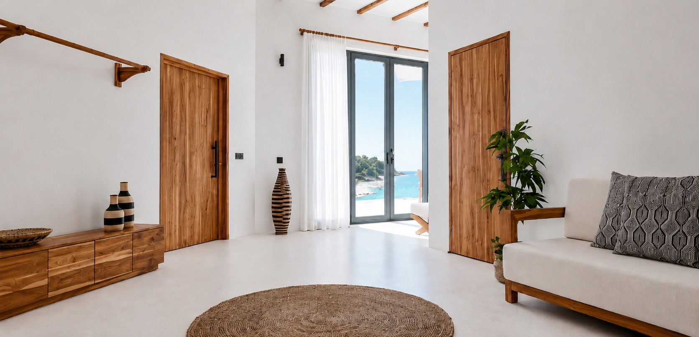
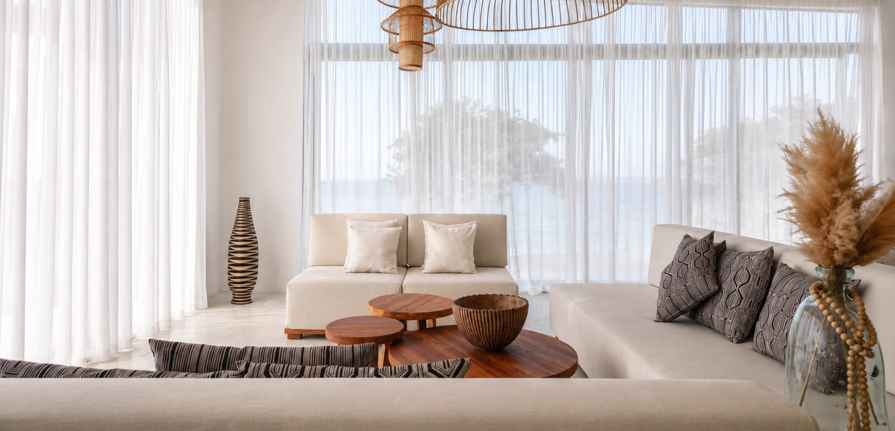
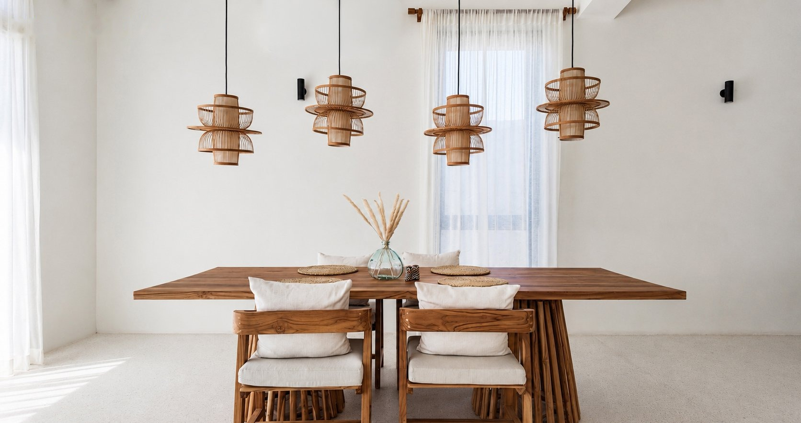
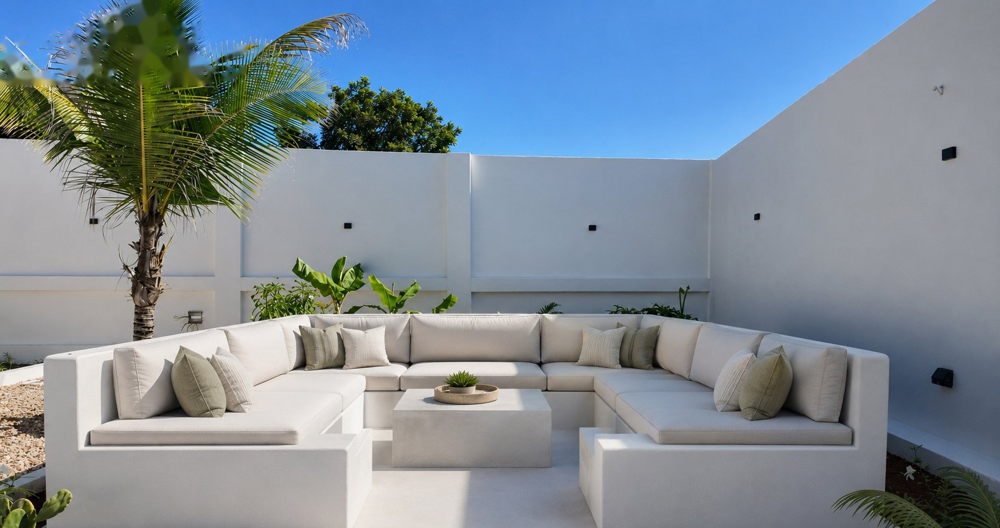
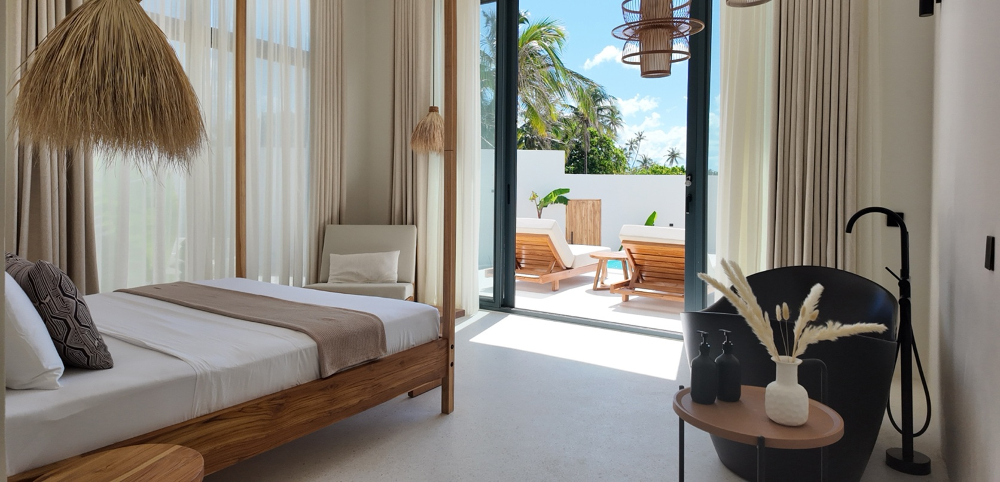
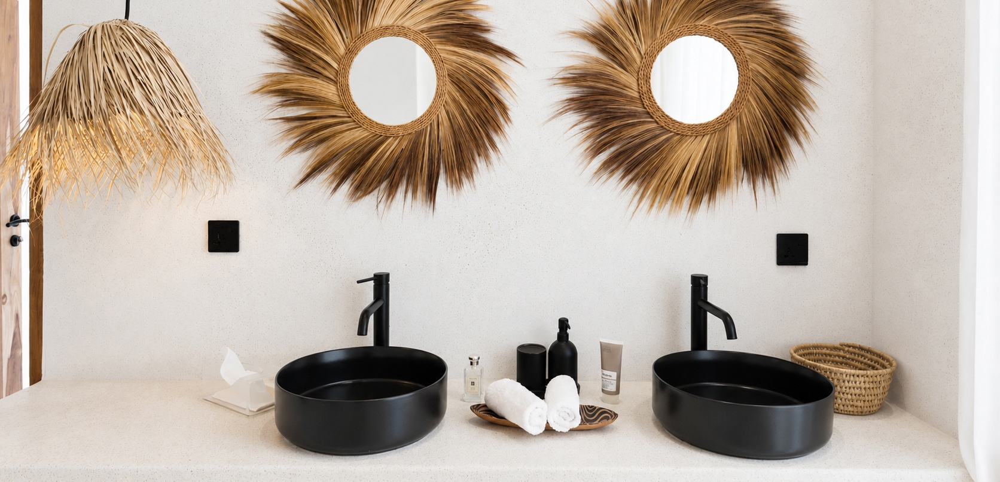
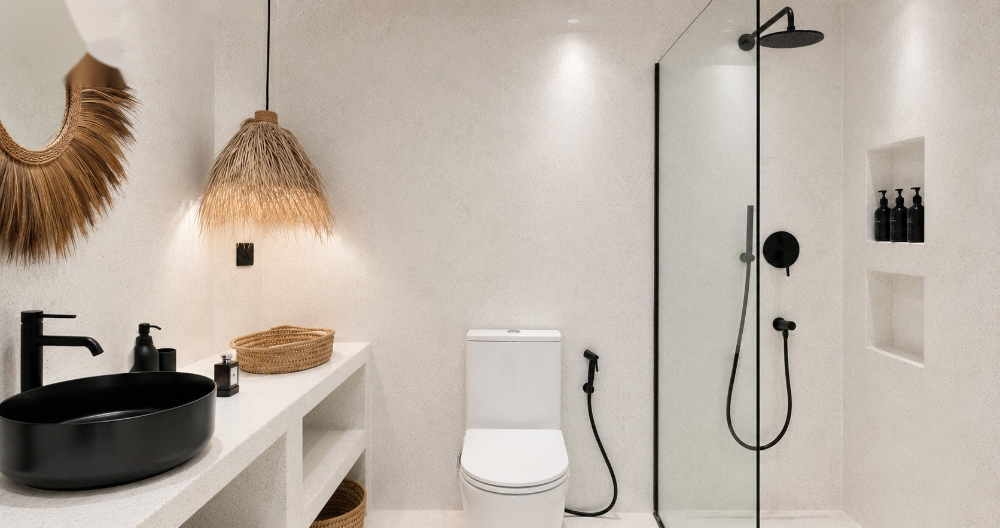
Ninety minutes from the airport. A world away from everything else.
Check availabilityLocation
Perched above the cliffs of Shungi Kajengwa on Zanzibar's quieter southern coast — an island named Africa's Leading Beach Destination 2026 by the World Travel Awards — away from the resort strip. Zanzibar International Airport (ZNZ) is around 90 minutes by road; a private transfer can be arranged on request.
Unguja South · Tanzania
Get directions on Google Maps →Rates & Booking
Rates are per night for the villa, based on the Zanzibar high, mid and low seasons. Exact dates and current availability are confirmed directly.
Low Season
Apr, May, Nov
$400 – $600 / night
Mid Season
Mar, Jun, Oct
$600 – $900 / night
High Season
Jul–Sep, Dec–Jan
$900 – $1,200 / night
Exact dates and length of stay can be confirmed by email — send your enquiry and we'll get back to you.
See our Cancellation Policy for refund terms.
Prefer to book through Airbnb? View our listing.
Prefer to book through Booking.com? View our listing.
Zanzibar Travel Guide
The most direct route is via Milan or Rome, year-round with Neos, or via Frankfurt with Condor and Discover Airlines, year-round, or via Madrid with World2fly (seasonal). From Paris, Air France flies to Zanzibar first (about 9 hours, effectively nonstop for Zanzibar-bound travellers) before continuing on to Kilimanjaro. From Zurich, Edelweiss stops in Kilimanjaro first, making the total journey closer to 10.5 hours. Coming from Munich, Austria or the UK, the best connections run via Doha, Dubai or Istanbul.
Two things are worth arranging before you travel: the e-Visa online at visa.immigration.go.tz (USD 50 for most nationalities, USD 100 for US citizens), and the mandatory ZIC travel insurance at visitzanzibar.go.tz, USD 44 per person, best booked a few days ahead.
From the airport to us is around 90 minutes. We're happy to arrange the transfer on request.
July to September and December to January are our high season — Zanzibar at its driest, sunniest and busiest, with temperatures around 28–31°C. April, May and November bring the rains: quieter, better-value days with occasional showers. March, June and October sit in between — still good weather, noticeably fewer visitors, and better value than high season.
Since a March 2025 regulation, local spending is legally priced in Tanzanian Shillings. In practice this is no inconvenience: card payment is widely accepted in restaurants and settles in TZS automatically. A little TZS cash is mainly useful for markets, tuk-tuks and tips. International bookings like ours are unaffected and remain payable in USD. ATMs are reliable in Jambiani and Paje.
Makunduchi Hospital is right in the village, and we've personally tested and can recommend the Island Clinic in Jambiani, ten minutes away. On the east coast the tide pulls back considerably, so sea swimming is best timed around high tide — our infinity pool, meanwhile, is ready any time of day. Zanzibar sees notably less malaria than the mainland safari regions; a quick chat with your own doctor before travelling is still good practice, as it would be for most tropical trips. Zanzibar is governed independently from the mainland and stayed entirely calm through the 2025 mainland elections — life and tourism carried on as usual. As in most well-loved destinations worldwide, the same easy-going common sense with your belongings serves you well here too.
Zanzibaris are warm, good-humoured and open — the island's character comes from a genuine mix of African, Arab, Indian and European influences. In Stone Town and villages away from the beaches, modest dress is appreciated; at the beach and pool it makes no difference.
Sockets are UK-style Type G — worth bringing an adapter. WiFi at the villa is reliable; a local SIM is useful further afield. Please let us know of any dietary preferences or allergies in advance.
The north around Nungwi and Kendwa is lively and swimmable all day. The east, with Paje and Jambiani, is where kitesurfing happens and the tide sets the rhythm. Stone Town sits in the west, worth the trip. The south, where Zuri Cliff is, stays quiet and away from it all.
Kizimkazi, 24 minutes away, is known for its dolphins, a seasonal fish auction right on the beach, and boat trips to the Menai Bay sandbanks. Mtende Beach, 23 minutes, sits between two rock formations with steps cut into the cliff. Kuza Cave near Jambiani, 12 minutes, and Maalum Cave in Paje, 19 minutes, are two different natural swimming caves worth telling apart. Paje itself is the centre of kitesurfing. Closer still, Makunduchi's own fish market and seaweed farms are worth a walk, no tour required.
Jozani Forest, 41 minutes, is home to the rare red colobus monkey. The Rock Restaurant, about the same distance, sits on a rock just off the coast near Pingwe — worth booking ahead.
Stone Town, an hour and a half away, is worth a full day, ideally combined with a spice farm visit. Safari Blue, departing from Fumba at a similar distance, is a full-day sail through Menai Bay with snorkelling and a seafood lunch. Mnemba Atoll, known for its dolphins and reef, lies on the northeast coast — a proper day trip, not a nearby stop. Prison Island and the Nakupenda sandbank sit near Stone Town, known for their giant tortoises.
Both Jambiani, 12 minutes away, and Paje, 19 minutes, have a good choice of restaurants — from fresh seafood to Italian and international options. For an evening out, it's a short drive.